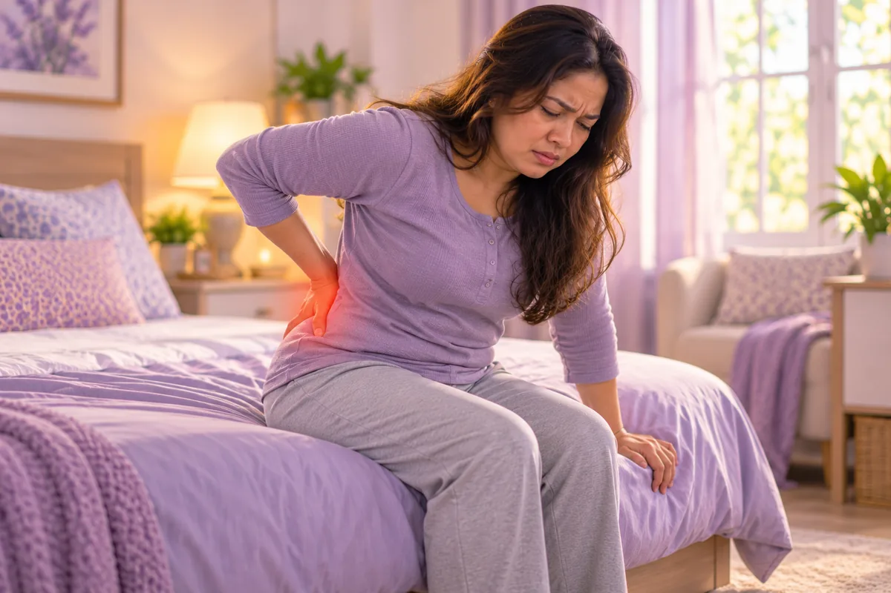
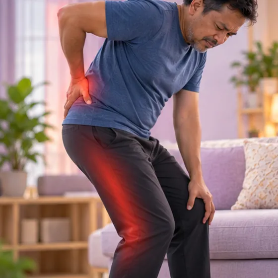
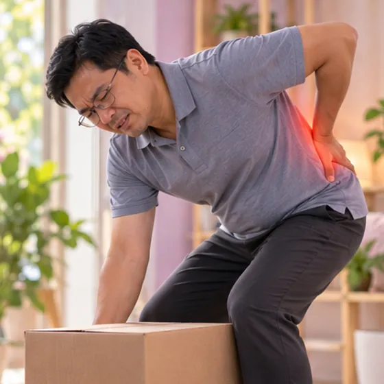
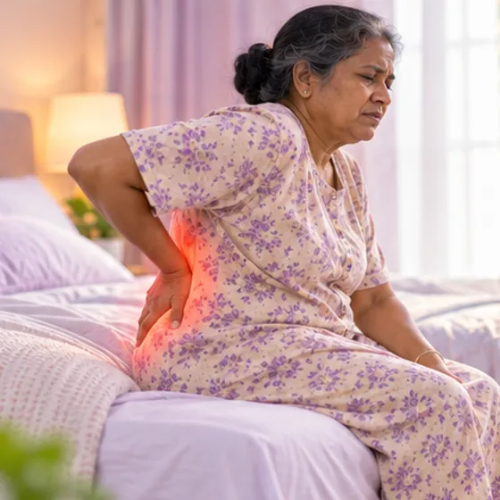
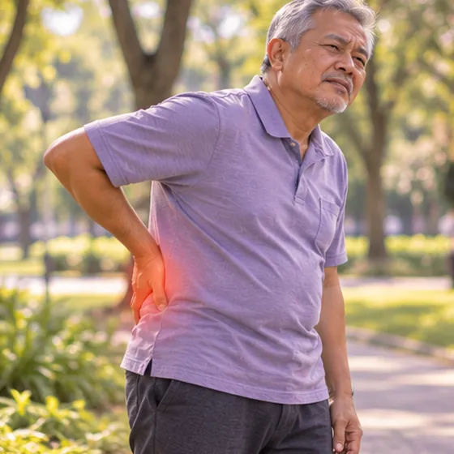
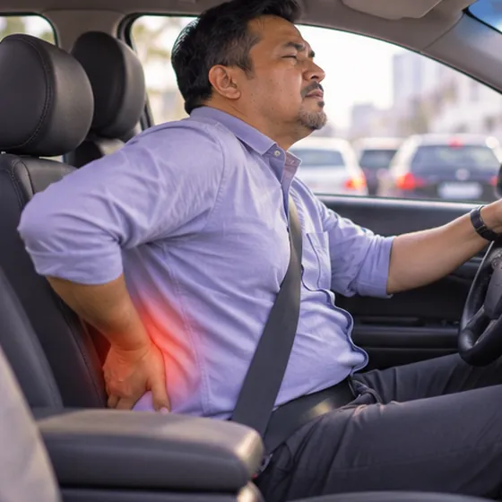

Cakera tergelincir di pinggang
Juga dipanggil hernia atau prolaps cakera lumbar
Apa itu
Cakera lembut di antara dua tulang pinggang menonjol atau tertolak keluar dan boleh menekan saraf berdekatan.
- Pinggang
- Boleh menekan saraf
- Sakit pinggang dan kaki
- Jumpa doktor
- Doktor ortopedik (tulang belakang), pakar neurologi, ahli fisioterapi
- Biasa pada
- Orang dewasa umur 30 hingga 50 tahun, lebih kerap lelaki
- Berjangkit
- Tidak
- Perjalanan
- Selalunya bertambah baik dalam beberapa minggu hingga bulan
Butiran perubatan
Apa yang berlaku di pinggang
Di antara setiap pasangan vertebra terdapat cakera: gelang luar yang kuat mengelilingi bahagian tengah yang lembut seperti gel. Dengan usia, lelasan berulang atau kadang-kadang satu usaha yang mendadak, gelang itu boleh melemah atau retak dan bahagian tengah boleh tertolak keluar. Kebanyakan hernia berlaku di L4–L5 dan L5–S1. Tonjolan itu boleh merengsa atau menekan akar saraf yang lalu berdekatan, menyebabkan sakit, kesemutan atau kelemahan sepanjang kaki. Badan sering menyerap sebahagian bahan yang keluar dalam beberapa minggu hingga bulan.
Dari ringan ke teruk
- Cakera menonjol: cakera menonjol tetapi gelang luar masih utuh
- Hernia: bahagian tengah yang lembut tertolak melalui bahagian gelang yang lemah
- Ekstrusi: sebahagian terputus dan keluar dari cakera; kurang biasa dan lebih berkemungkinan menyebabkan gejala saraf yang kuat
Prognosis
Kebanyakan orang bertambah baik tanpa pembedahan dalam beberapa minggu hingga bulan, dengan kekal aktif secara lembut, fisioterapi dan pelega sakit yang dipilih oleh doktor mereka. Sebilangan kecil mempunyai gejala saraf yang teruk atau berpanjangan dan ditawarkan ujian atau prosedur lanjut. Sindrom cauda equina jarang berlaku, tetapi ia kecemasan.
Tanda biasa

Sakit pinggangLumbago (sakit pinggang) 
Sakit menjalar ke kakiSciatica 
Kaki kebas dan kesemutanNeuropati periferi 
Kaki terasa lemahKelemahan kaki 
Sukar membongkok atau mengangkatPergerakan pinggang terhad 
Belakang kaku pada waktu pagiKekakuan pagi
Butiran perubatan
Gejala dengan lebih terperinci
- Sakit pinggang: kadang-kadang mendadak, sering lebih teruk apabila membongkok, duduk, batuk atau bersin
- Sciatica (sakit kaki): sakit tajam, membakar atau seperti renjatan dari punggung ke belakang atau sisi kaki, biasanya di sebelah sahaja
- Kesemutan atau kebas: di betis, kaki atau jari kaki, mengikut laluan saraf
- Kelemahan: sukar mengangkat kaki atau jari kaki, tersandung, atau kaki yang tiba-tiba lemah
- Tanda amaran: kebas di sekitar pangkal paha atau paha dalam, masalah baru untuk kencing atau mengawal usus, atau kelemahan pada kedua-dua kaki: ke hospital segera
Mengapa ia berlaku
Cara mengangkat yang salahCara angkat yang salah (beban fleksi lumbar) 
Duduk berjam-jamDuduk lama 
Membongkok dengan komputer ribaPostur yang buruk 
Peningkatan usiaDegenerasi cakera berkaitan usia 
Memandu berjam-jamDuduk lama dan getaran Membawa beban berat di sebelah sahajaBeban tidak seimbang
Butiran perubatan
Punca dan faktor risiko
Cakera kehilangan air dan kelenturan dengan usia, menjadikan gelang luar lebih mudah melemah. Hernia sering berlaku selepas bertahun-tahun lelasan kecil ditambah satu pencetus lagi, seperti mengangkat, memulas atau pemanduan jauh.
- Umur: paling kerap antara kira-kira 30 dan 50 tahun, ketika cakera masih lembut
- Mengangkat dan memulas yang berat atau berulang: terutamanya dengan belakang yang bongkok
- Duduk dan memandu lama: duduk memberi lebih beban pada cakera berbanding berdiri
- Berat badan berlebihan dan merokok: lebih beban pada cakera dan kesihatan cakera yang lebih lemah
- Sejarah keluarga dan otot teras yang lemah: masalah cakera boleh berlaku dalam keluarga, dan otot yang lemah memberi kurang sokongan kepada tulang belakang
Jumpa doktor dahulu jika
- Kebas di sekitar pangkal paha atau paha dalam: ke hospital segera
- Masalah baru untuk kencing atau mengawal usus: ke hospital segera
- Kaki lemah atau tersandung
- Sakit selepas jatuh atau kemalangan, atau dengan demam
- Sakit teruk yang tidak reda dengan rehat atau mengejutkan anda pada waktu malam
- Sakit kaki tidak reda selepas kira-kira 6 minggu
Jika mana-mana berkenaan, sila jumpa doktor sebelum sesi.
Teruskan mengambil ubat biasa anda dan terus berjumpa doktor. Sesi kami ialah sokongan lembut dan tidak menggantikan rawatan perubatan.
Butiran perubatan
Bagaimana doktor memeriksa
Ramai orang tanpa gejala juga menunjukkan cakera menonjol pada MRI, jadi imbasan sentiasa dibaca bersama gejala dan pemeriksaan anda.
- Sejarah dan pemeriksaan saraf: kekuatan otot, refleks, deria pada kaki dan ujian angkat kaki lurus; ia menunjukkan akar saraf mana yang mungkin terlibat
- MRI: ujian terbaik untuk melihat cakera dan saraf; digunakan apabila gejala teruk, berlanjutan lebih kira-kira 6 minggu, atau pembedahan dipertimbangkan
- X-ray: tidak menunjukkan cakera, tetapi menunjukkan tulang dan susunannya
- Imbasan CT dan ujian saraf (EMG): digunakan dalam kes tertentu
Masalah yang terasa serupa
Ketegangan otot, masalah sendi pinggul, sakit sendi sakroiliak, penyempitan saluran tulang belakang dan otot punggung yang tegang menekan saraf boleh terasa seperti cakera tergelincir, jadi doktor memeriksa untuk membezakannya. Sakit belakang atau kaki dengan demam, sakit dada atau sakit perut teruk yang mendadak memerlukan rawatan segera: hubungi 999.
Menjaga diri
Berjalan sedikit setiap hariSenaman aerobik berimpak rendah Kerusi yang menyokong belakangSokongan lumbar Angkat dengan kakiTeknik mengangkat yang selamat Bungkusan hangat di pinggangHaba permukaan 
Kuatkan otot terasSenaman penstabilan teras 
Regangan belakang yang lembutSenaman mobiliti lumbar
Butiran perubatan
Penjagaan harian dengan lebih terperinci
- Kekal aktif secara lembut: berjalan pendek beberapa kali sehari biasanya lebih membantu daripada berehat lama di katil; hentikan sebarang pergerakan yang menghantar sakit atau kesemutan ke kaki
- Pelega sakit: tanya doktor atau ahli farmasi apa yang selamat untuk anda; jangan mula ubat baru sendiri
- Fisioterapi: ahli fisioterapi boleh mengajar senaman yang sesuai dengan gejala cakera dan saraf anda; senaman teras dan regangan ditambah apabila sakit reda
- Duduk dan angkat dengan baik: kusyen kecil pada lengkung pinggang, kerap tukar posisi, bengkokkan lutut untuk mengangkat dan dekatkan beban
- Kehangatan: bungkusan hangat boleh melegakan otot tegang di sekitar tulang belakang
- Berat badan dan merokok: berat badan yang sihat dan tidak merokok baik untuk cakera
Beritahu ahli terapi anda
- Kaki kebas atau kesemutan
- Kaki lemah
- Kecederaan atau pembedahan belakang baru-baru ini
- Tulang lemah
- Perentak jantung atau implan logam
- Kehamilan
Ahli terapi anda akan menyemaknya bersama anda sebelum bermula.
Soalan dan jawapan
Apakah Cakera tergelincir di pinggang?
Juga dipanggil hernia atau prolaps cakera lumbar. Cakera lembut di antara dua tulang pinggang menonjol atau tertolak keluar dan boleh menekan saraf berdekatan.
Apakah tanda biasa Cakera tergelincir di pinggang?
Sakit pinggang · Sakit menjalar ke kaki · Kaki kebas dan kesemutan · Kaki terasa lemah · Sukar membongkok atau mengangkat · Belakang kaku pada waktu pagi
Mengapa Cakera tergelincir di pinggang berlaku?
Cara mengangkat yang salah · Duduk berjam-jam · Membongkok dengan komputer riba · Peningkatan usia · Memandu berjam-jam · Membawa beban berat di sebelah sahaja
Bagaimana menjaga diri dengan Cakera tergelincir di pinggang?
Berjalan sedikit setiap hari · Kerusi yang menyokong belakang · Angkat dengan kaki · Bungkusan hangat di pinggang · Kuatkan otot teras · Regangan belakang yang lembut
Bolehkah sesi AI Body Master membantu Cakera tergelincir di pinggang?
Sesi ialah sokongan meridian tanpa jarum yang lembut untuk kesejahteraan anda. Ia tidak merawat atau menyembuhkan Cakera tergelincir di pinggang dan tidak menggantikan ubat atau doktor anda. Beritahu ahli terapi anda sebelum sesi bermula.
Keadaan berkaitan
- Kaki rata
- Penyakit tulang rapuh (osteogenesis imperfekta)
- Artritis pascatrauma
- Penyakit Kashin-Beck
- Sendi pinggul berbunyi klik
- Fluorosis tulang
- Tendinopati Achilles
- Tendonitis Achilles
- Kerosakan buah pinggang akibat asid urik tinggi
- Perikoronitis (radang gusi di sekitar gigi)
- Nodul (ketulan kecil)
- Terseliuh pinggang secara mengejut
Rujukan: Mayo Clinic: Herniated disk; NHS: Slipped disc; Cleveland Clinic: Herniated disk; NCBI StatPearls: Lumbar Disc Herniation
Halaman dikemas kini: 2026-11-01